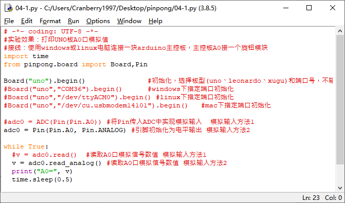

项目4 智能节能灯¶

二、项目实施¶
（1）通过光线亮度控制小灯¶
硬件准备：¶
主控：Arduino UNO、IO 传感器扩展板 V7.1
模块：LED发光模块、光线传感器
连接线：TypeAtoB方口USB连接线
将LED模块接入D13引脚,光线传感器接入A2引脚
程序编写：¶
1、在示例程序中找到adc.py，并用IDLE打开，并修改端口号，或删去端口号，使用自动识别。
2、修改代码，当亮度低于100的时候，点亮LED灯。
import sys
import time
from pinpong.pinpong import *
board = PinPong("uno","com5")
board.connect()
light = ADC(board, Pin(board, Pin.A2))
d13 = Pin(board, Pin.D13, Pin.OUT)
while True:
vl = light.read()
print("Light=", vl)
if vl < 100 :
d13.value(1)
else :
d13.value(0)
3、摁下F5运行程序，查看效果。当遮住光线传感器的时候LED灯会亮起，恢复后LED灯会熄灭。

注意：在程序运行时不可以拔掉与Arduino连接的USB线，且不能关闭新弹出的Python shell运行窗口，如果拔线或者关闭运行窗口，程序功能就会停止执行。
（2）加入声音传感器检测¶
硬件准备：¶
主控：Arduino UNO、IO 传感器扩展板 V7.1
模块：LED发光模块、光线传感器、声音传感器
连接线：TypeAtoB方口USB连接线
硬件连接图：

将LED模块接入D13引脚，光线传感器接到A2引脚，声音传感器接到A1引脚。
程序编写：¶
1、设计程序逻辑图

2、导入必要的包和初始化设置。
import sys
import time
from pinpong.pinpong import *
board = PinPong("uno","com5")
board.connect()
sound = ADC(board, Pin(board, Pin.A1))
light = ADC(board, Pin(board, Pin.A2))
d13 = Pin(board, Pin.D13, Pin.OUT)
3、加入逻辑判断部分。
while True:
vs = sound.read()
vl = light.read()
print("Sound=",vs,"Light=", vl)
if vs > 200 and vl < 100 :
d13.value(1)
time.sleep(3)
else :
d13.value(0)
4、运行代码，当遮住光线传感器且发出声音时，LED灯会亮3秒然后熄灭。

三、代码分析¶
import sys
import time
from pinpong.pinpong import * #导入必要的库函数
board = PinPong("uno","com5") #初始化设置Aduino
board.connect() #连接Arduino，并检测固件
sound = ADC(board, Pin(board, Pin.A1)) #初始化模拟引脚A1，检测声音大小
light = ADC(board, Pin(board, Pin.A2)) #初始化模拟引脚A2，检测光线强度
d13 = Pin(board, Pin.D13, Pin.OUT) #初始化13号数字引脚
while True:
vs = sound.read()
vl = light.read()
print("Sound=",vs,"Light=", vl) #打印声音和光线数据
if vs > 200 and vl < 100 : #判断光线和声音大小
d13.value(1)
time.sleep(3)
else :
d13.value(0)
如何进行多条件判断
在本项目中我们需要判断两个条件，在我们做逻辑判断的时候经常会需要进行多条件判断，有些时候是需要两个条件都要满足的，有些时候是两个条件满足任意一条就可以了。在这种情况下，我们应该如何编写程序呢？
两条条件都需要满足的情况下，我们可以这样写
if 条件A and 条件B
两条条件满足任一即可的情况下，我们可以这样写
if 条件A or 条件B
想要得到反向的结果，即当x为true，得到的结果为false，当x为false时，得到的结果为true，我们可以这样写
not 条件
四、硬件分析¶
在项目中我们用到了两种传感器，光线传感器和声音传感器
光线传感器是将光信号变成电信号的特殊电子元件，在光线传感器中起到主要作用的就是就是光敏二极管。光敏二极管是光敏电阻中的一种。光明电阻在黑暗环境中，具有非常高阻值的电阻。光线越强，电阻值反而越低。随着两端电阻值的减小，电压也就相应减小，所以从模拟口独到的值也就变小。我们读取的数据也是由此而来的。

声音传感器的作用相当于一个麦克风。它用来接收声波，反馈声音的振动图像。在声音传感器上起到主要作用的就是麦克风，声波使麦克风内的薄膜震动，导致内部电容的变化，而产生与之对应的电压变化，经过转换为可监测的电压值反馈而来。